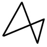

基本说明
使用的编辑器是Typora。
涉及的快捷键均以Typora为准。
在线编辑：Dillinger。
Reference
文字标注
即，修改文本的格式。
标题
#~######，一到六级标题。Ctrl+1~6（Ctrl+0为文本）- 增大标题
Ctrl+'+'，减小标题Ctrl+'-'。
下划线
- （源自html语言）
Command+U
强调
- **…… ** （前后各两个*）
Ctrl+B
斜体
- *…… *（前后各1个*）
Ctrl+I
删除
- ~~……~~（前后各2个~，半角输入）
Atl+Shift+5
方框
- `……`（前后各1个`，半角输入）
Ctrl+Shift+'
注释【Hexo需更换渲染引擎】
[^注]和[^注]: ……配套使用今天吃个啥？1
1. 吃土豆肉丝~ ↩
==高亮==【Hexo未支持】
- 需要先到
Preference设置中勾选相应选项2。 - \==……==（前后各两个=）
2. 包括行内公式、上下标、语言高亮、图标等Markdown扩展语法。 ↩
角标【Hexo未支持】
- 上角标：x^2^ （x\^2^ ）
- 下角标：H~2~O（H~2~O）
- 行内公式：$ x^2 $ （$x^2$）
转义符
- \
居中
\
\
注：Typora目前并不会直接预览居中效果——相应的效果只有输出文本的时候才会显现。（？） 存疑。
新：文本居中的引用（可操作，来自NexT官方文档）
列表List
List。
有序
数字+.+空格.
- 大师球
- 楼上233
- 破坏队形~
无序
+、-、*加`空格。
- 海伯利安
- 阿西莫夫
- 茨威格
- 与魔鬼作斗争
- ……
- 与魔鬼作斗争
- 神经漫游者
任务Todo List【Hexo需渲染引擎特定状态】
-+空格+[空格]+空格。
- [ ] 学习
- [x] 玩233
- [ ] 吃饭
- [x] 睡觉
（前面的方框可以点击~）
表格Table
Ctrl+T
| 早餐 | 面条 | 咖啡 |
|---|---|---|
| 午餐 | 土豆肉丝饭 | 橙子 |
| 晚餐 | 沙拉 | 牛奶 |
- 还可以打打算法。。。
| Buchberger算法 |
|---|
| if the ideal is included in the ……then |
| do sth. |
（Hexo对齐格式支持不太好，网页的话还是算了。。）
Ctrl+Enter自动增加表格行数。
分割线
- 个以上的
-，或者个以上的*。
插入
图片
直接拖进窗口即可~

或者：Ctrl+Shift+I
链接
格式：[Youtube](https://www.youtube.com/)
Ctrl+K
数学公式
- 基本语法参考：基本数学公式语法(of MathJax)
公式块：
行内/内联公式：
Bernoulli: $ p(x)=p\^x(1-p)^{1-x} $
$$ f(x)=\frac{1}{\sqrt(2\pi)\sigma}exp(\frac{(x-\mu)\^2}{2\sigma^2}) $$
注意：网页端的渲染需要更换新的渲染引擎，还需要在文章的Front-matter里打开mathjax开关 。如下：
1 | --- |
- 之所以要在文章头里设置开关，是因为考虑只有在用到公式的页面才加载 Mathjax，这样不需要渲染数学公式的页面的访问速度就不会受到影响了。
- 可参考hexo博客MathJax公式渲染问题或者在Hexo中渲染MathJax数学公式。
- 可参考如何在Hexo中支持Mathjax。
- 改来改去还是有点问题，前面的注释功能莫名奇妙的好了【这样的注释有点不习惯】，TodoList莫名其妙的不能显示，链接的渲染时灵时不灵，关键是。。。这数学公式也有点。。。:joy:把所有的数学公式都强行转义了。。。（包括我不想转拿来对比的orz）
代码
代码块：
1 | function g = sigmoid(x) |
表情【Hexo不支持】
:sad :sweat:
:happy :happy:
:cry :cry:
:joy :joy:
继续233党~
引用
>+空格+内容
233
引用嵌套，继续~
更多快捷鍵
生成目录
[toc]+Enter自动生成。（Hexo博客暂不支持该语法~）
[TOC]
文本选取
选中一整行
ctrl+l。
选中单词
ctrl+d。
选中相同格式的文字
ctrl+e
快速跳转
跳转到文章开头
ctrl+home
跳转到文章结尾
ctrl+end
文本查询
搜索
ctrl+f
替换
ctrl+h
相关文章